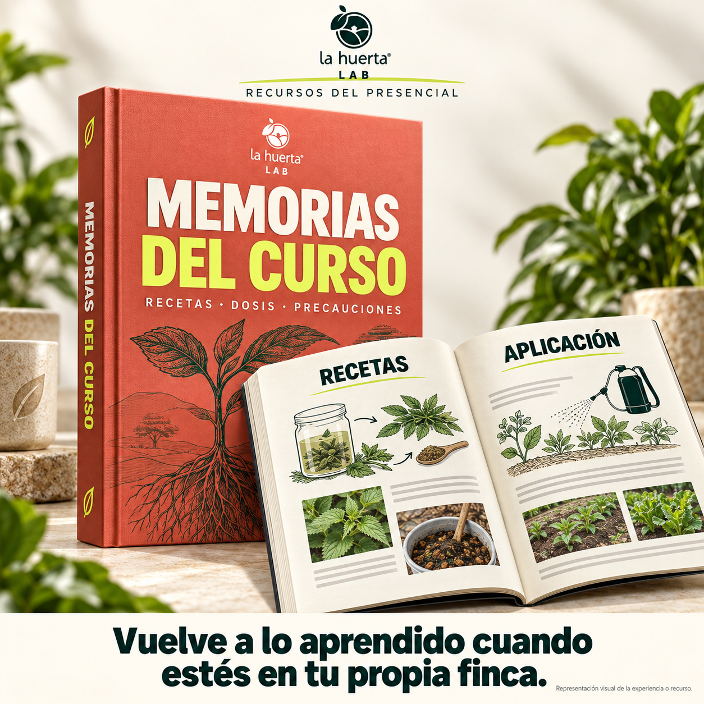
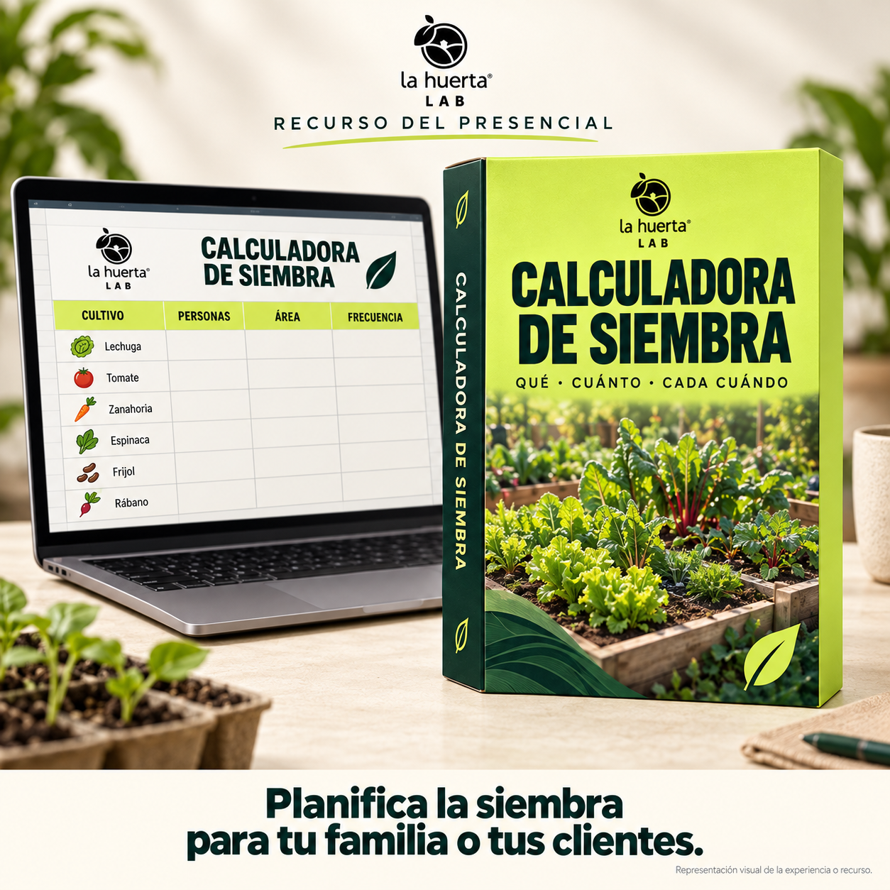

Fincas Productivas · En vivo con Iván Castrillón
Los siete principios que ordenan el curso, módulo por módulo.
Hoy vamos a abrir el programa
Y con qué tarea empiezas a aplicarlo en tu finca o en el predio que estás pensando comprar.
De la masterclass a este curso
Los siete principios te muestran cómo trabajar la finca.
Un principio por módulo
01Microclima
02Microorganismos
03Reciclaje de nutrientes
04Diversidad
05Agua
06Energía
07Descanso
Quién te va a acompañar
La Huerta es hotel, restaurante y campo escuela en menos de dos hectáreas. Los siete principios no son teoría: están funcionando ahí todos los días.
Microclima
Un predio cubierto y con vegetación en distintos estratos se comporta distinto a un suelo desnudo.
El principio
Árboles, cultivos y cobertura protegen el suelo y crean condiciones más estables dentro del predio.
Lo que empiezas a definir
Desde el principio decides qué vas a producir y quién podría comprártelo cerca.
Microorganismos
La vida del suelo participa en la nutrición y en el equilibrio de los cultivos.
El principio
El manejo empieza por cuidar el hábitat de los microorganismos y entender qué función cumplen.
La práctica
En el curso trabajas los métodos, las cantidades, los tiempos y los errores que dañan un lote.
Reciclaje de nutrientes
La fertilidad se construye con materia orgánica, microorganismos y minerales.
El principio
Su textura, su estructura y la materia orgánica te dicen por dónde empezar.
Lo que aprendes a usar
Cada proceso tiene un propósito. La tarea es interpretar tu suelo o dimensionar tu biofábrica.
Diversidad
La producción se planifica desde lo que tu familia o tu mercado necesita.
El principio
Una planificación semanal evita cosechas que llegan todas al tiempo y semanas sin producto.
La herramienta
Superficie disponible, consumo y rotación por familias botánicas.
Agua
Antes de sembrar o comprar un predio, hay que entender su agua.
El principio
El relieve y la cobertura determinan qué parte de la lluvia puede infiltrarse y quedarse en el lote.
La tarea
Y, si aún estás buscando tierra, un criterio para evaluar predios antes de comprar.
Energía
En una finca, lo que sobra en un proceso puede alimentar el siguiente.
El principio
El pasto alimenta animales. El estiércol vuelve al suelo. El suelo sostiene nuevos cultivos.
La decisión
Se calcula con el área, el alimento disponible y la mano de obra real.
Descanso
Plantas y potreros necesitan tiempo para recuperarse antes del siguiente uso.
El principio
El Pastoreo Racional Voisin organiza la ocupación y el descanso de cada potrero según el crecimiento del pasto.
El cierre del programa
Sales sabiendo cuál es tu primer paso y qué depende de él.
Pausa para el chat
Si todavía no tienes finca, piensa en cuál revisarías primero antes de comprar.
De cada módulo sales con algo hecho
Además de las clases

Memorias del curso Lo que vemos, escrito y ordenado por principio, para consultarlo en tu finca.
Calculadora de siembra Qué sembrar, cuánto y cada cuánto, según lo que come tu familia o pide tu mercado.El mismo método
Fincas Productivas · Online
Videos, encuentro en vivo los miércoles, tarea para tu proyecto y grabaciones disponibles.
Del 30 de septiembre al 18 de noviembre · miércoles, 6:00 a 8:00 p. m. hora Colombia
Fincas Productivas · Presencial
Biofábrica, cultivos, agua y potreros vistos en su contexto, con práctica en campo.
Próxima inmersión: del 1 al 4 de octubre de 2026
Lo que más nos preguntan
Antes de inscribirte, conversemos
Nos cuentas en qué punto estás y te decimos qué modalidad encaja. Si ninguna encaja ahora, también te lo decimos.
Elige tu horarioInscripciones previstas hasta el jueves 24 de septiembre, 23:59 (Colombia).
¿Prefieres escribir? WhatsApp +57 315 850 5012